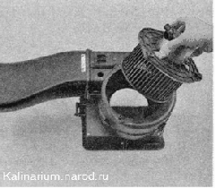

Электровентилятор отопителя - снятие и установкаСнятие 1. Подготавливаем автомобиль к выполнению работы. 2. Снимаем панель приборов в сборе с отопителем. 3. Отсоединяем колодку проводов от дополнительного резистора. 4. Отворачиваем два самореза крепления отопителя к кронштейнам усилительной балки панели приборов. 5. Извлекаем кожух электровентилятора отопителя из панели приборов. 6. Отсоединяем шланг 1 вентиляции от электродвигателя вентилятора и крестовой отверткой отворачиваем три самореза 2 крепления электровентилятора к кожуху. 7. Извлекаем электровентилятор из кожуха.  Установка Устанавливаем электровентилятор в обратной последовательности. |